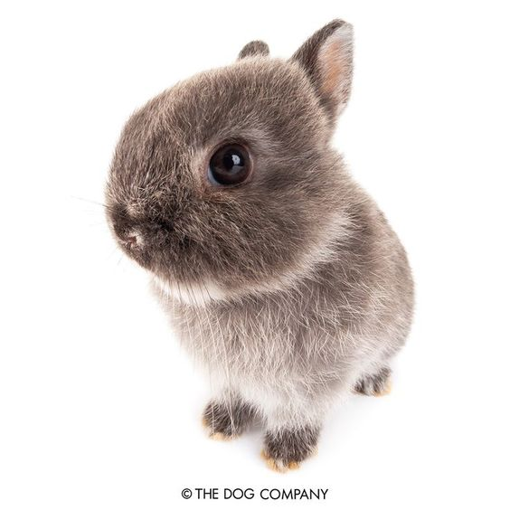

El conejo común o conejo europeo (Oryctolagus cuniculus) es una especie de mamífero lagomorfo de la familia Leporidae, y el único miembro actual del género Oryctolagus. Mide hasta 50 cm y su masa puede ser hasta 2.5 kg. Ha sido introducido en varios continentes y es la especie que se utiliza en la cocina y en la cunicultura. Está incluido en la lista 100 de las especies exóticas invasoras más dañinas del mundo3 de la Unión Internacional para la Conservación de la Naturaleza. Su introducción en Australia es uno de los capítulos más importantes del deterioro causado por especies exóticas invasoras.

Se caracteriza por tener un cuerpo cubierto de un pelaje espeso y lanudo, de color pardo pálido a gris, cabeza ovalada y ojos grandes. Pesa entre 1,5 y 2,5 kg en estado salvaje. Tiene orejas largas de hasta 7 cm las cuales le ayudan a regular la temperatura del cuerpo y una cola muy corta. Sus patas anteriores son más cortas que las posteriores. Mide de 34 a 50 cm en condiciones favorables, incluso más en razas domésticas. Todas estas características que posee esta especie en estado salvaje pueden variar significativamente según la raza.
El conejo salvaje mide de 34 a 50 cm (longitud cabeza y cuerpo), las orejas miden de 4 a 8 cm. Su peso varía de 1,2 a 2,5 kg. Posee una piel de color pardo leonado pelirrojo, a veces colorado que permite su camuflaje para evitar a sus depredadores.
La talla de conejos domésticos varía muchísimo de una raza a la otra. El más grande, el gigante de Flandes, puede alcanzar 8 kg y 80 cm de longitud pero el conejo ariete enano sobrepasa apenas 1 kg, a veces menos para los conejos extra enanos. La piel originalmente es gris beige —a veces con matices negros o pelirrojos—, con el vientre más claro y el fondo de la cola (rabo) blanco, mientras que los conejos domésticos presentan colores muy variados, uniformes, degradados o moteados. Existen cerca de ochenta variedades.
Los dientes de un conejo, particularmente sus incisivos, crecen sin cesar. El conejo debe constantemente desgastar sus dientes con el fin de evitar que se vuelvan demasiado largos (lo que podría por otro lado herirlo).
Era abundante en el Paleolítico, a juzgar por los restos descubiertos en la península ibérica.6 En la actualidad, su área de distribución abarca el norte de África y toda Europa hasta Rusia, siendo introducido en muchos lugares del continente con motivos cinegéticos. A lo largo de la historia también ha sido llevado al estado de Washington (Estados Unidos), Chile, Sudáfrica y Australia, donde los conejos cimarrones se han convertido en la principal plaga del país debido a la ausencia de depredadores y competidores naturales.
Vive en áreas secas próximas al nivel del mar con un suelo arenoso y blando para facilitar la construcción de madrigueras. Habitan en bosques aunque prefieren campos extensos cubiertos por matorrales donde pueden esconderse. Antiguamente también eran frecuentes en tierras de cultivo aunque los nuevos métodos de arado incluyen la destrucción de madrigueras de conejos. A pesar de ello, esta especie se ha adaptado a la actividad humana viviendo en parques, campos de césped o incluso cementerios. En ocasiones se encuentran en cultivos agrícolas donde se alimentan de lechuga, granos o raíces cuyo fin era la ingesta humana.